Il mouse è una periferica di input che controlla la posizione di un puntatore sullo schermo,
permettendo all'utente di interagire tramite appositi pulsanti.
Grazie al mouse è stato possibile inventare una nuova modalità di interazione tra uomo e macchina, dando inizio ad uno sviluppo di interfacce utente sempre più interattive e dinamiche.
Questo dispositivo di puntamento è in grado di inviare al sistema un comando da parte dell’utente, in modo tale che a un suo movimento ne corrisponda uno analogo da parte di un indicatore sullo schermo del monitor, chiamato puntatore. L’etimologia del nome mouse deriva dal termine inglese topo per via della somiglianza con la forma dell’animale. Il sistema venne brevettato nel 1967 e ancora oggi, in tutti i personal computer del mondo, viene ancora utilizzato.
storia
Douglas Engelbart è ritenuto l’inventore del dispositivo informatico. Engelbart avrebbe ideato un ambiente software con lo scopo di facilitare l’attività degli scienziati. Il primo prototipo venne concepito nel 1964 ed il brevetto per il suo indicatore di posizione X-Y per display venne assegnato il 21 giugno 1967. Durante la Joint Computer Conference al Convention Center di San Francisco, nel 1968, si svolse la dimostrazione pubblica del progetto.
Alcuni anni dopo la Xerox produsse il primo computer dotato di interfaccia grafica e mouse, lo Xerox Alto. Successivamente Steve Jobs della Apple Computer, vedendo una dimostrazione alla Xerox dell’uso del mouse, sviluppò una versione più avanzata aumentandone l’usabilità, il computer Lisa. I mouse Apple vennero prodotti in più versioni. Nel corso degli anni vennero sperimentate molte tipologie di dispositivi di puntamento, ma attualmente il dispositivo di puntamento più efficace e comodo rimane il mouse.
evoluzione delle periferiche
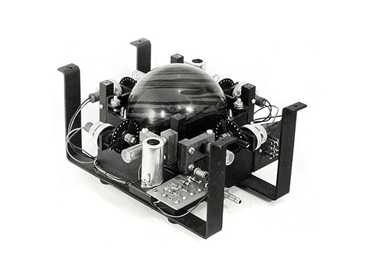
1952
trackball DATAR
Inventata come parte di un sistema di tracciamento radar post-Seconda Guerra Mondiale, la prima trackball utilizzava una palla da bowling contenente sensori per rilevarne la rotazione su due assi.
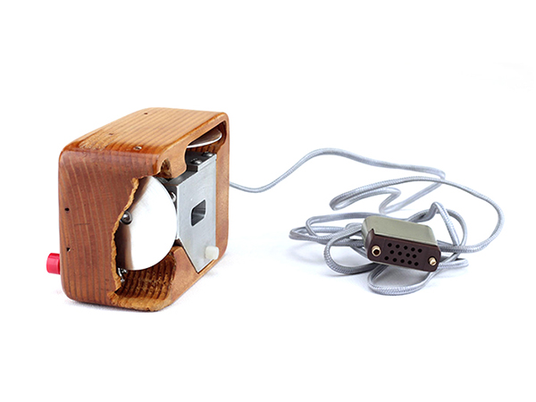
1964
mouse Engelbart La prima periferica di puntamento della storia concepita nel 1964 e brevettata 1967, il mouse di Douglas Engelbart è composto da un corpo in legno e dotato di due rotelle nella parte inferiore.
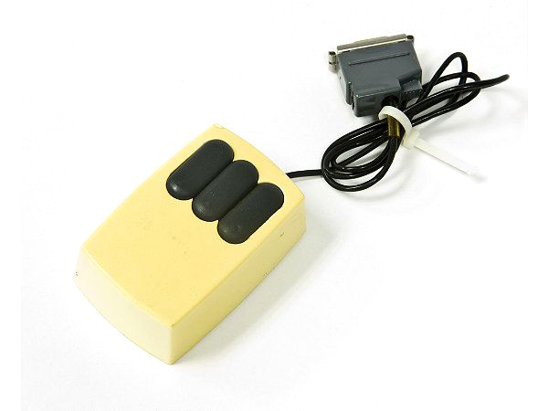
1981
mouse Xerox
Primo mouse dell’era moderna. In plastica, ha nella parte inferiore le due rotelle per il tracciamento degli spostamenti, mentre nella parte superiore trovano spazio tre pulsanti.
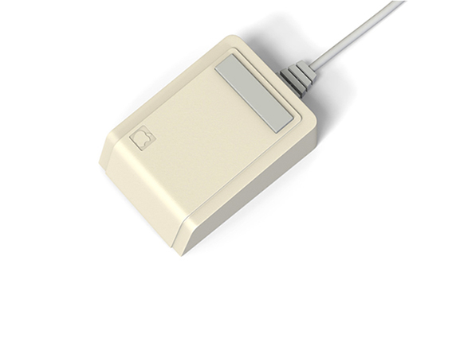
1983
mouse Lisa
Primo mouse che consente all’utente di interagire con i vari elementi grafici dell’ambiente operativo in maniera piuttosto naturale.
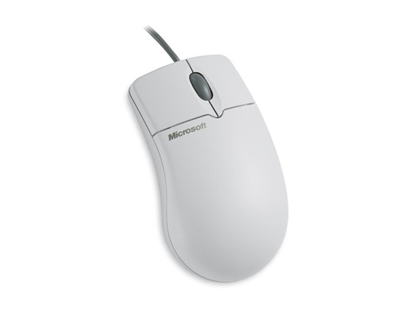
1996
IntelliMouse
È una serie di mouse per computer Microsoft con un elemento rivoluzionario: una rotella centrale per scrollare le pagine.
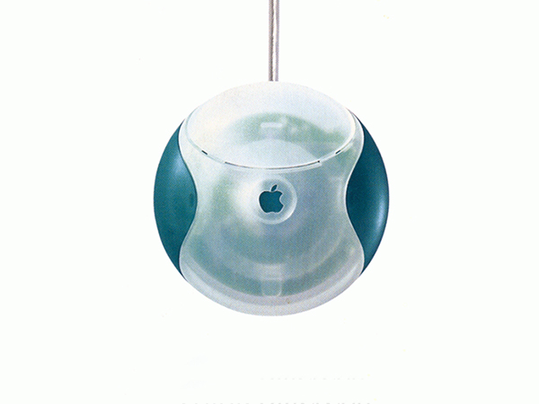
1998
Apple USB mouse
Mouse Apple con connettore usb a forma circolare. La peculiare forma del mouse attirò molte critiche, dato che molti utenti consideravano il mouse troppo piccolo per essere utilizzato agevolmente.
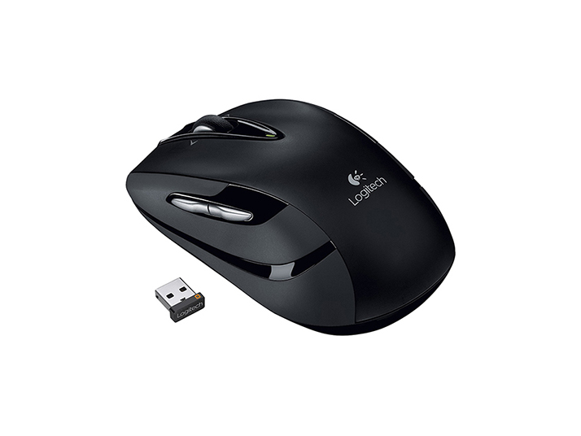
2000
mouse wirless
Con l'arrivo dei notebook nasce un nuovo tipo di mouse senza fili. Il mouse comunica attraverso i raggi infrarossi o Bluetooth del ricevitore collegato alla porta USB del pc.
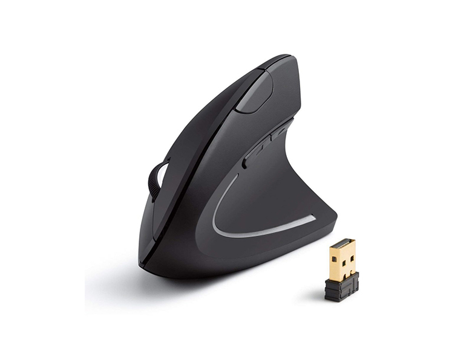
2000
mouse ergonomici
I mouse ergonomici permettono di tenere le mani e le braccia nelle corrette posizioni, evitando problemi alle mani e al gomito dovute a molte ore di lavoro.
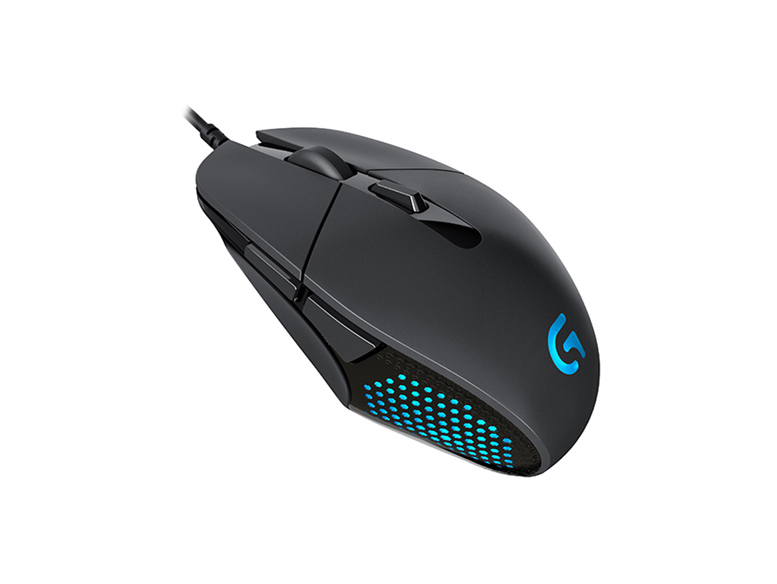
2000
mouse gaming Con il diffondersi dei videogame nei primi anni del nuovo millennio molte aziende hanno creato mouse dedicati al gaming.
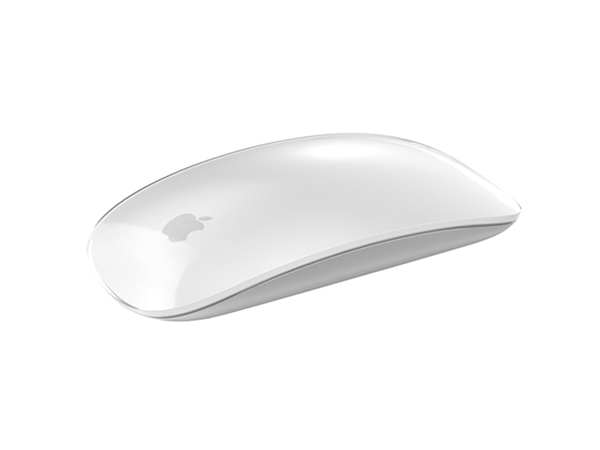
2009
Apple Magic mouse Venduto e prodotto da Apple, è il primo mouse consumer ad avere funzionalità multi-touch.
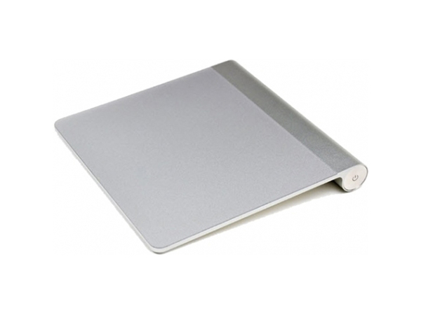
2010
Apple Magic trackpad Il primo trackpad multi-touch della Apple che consente all'utente di interagire con il computer tramite comandi impartiti con una o più dita contemporaneamente.
funzionamento
Il principio di funzionamento del mouse è abbastanza semplice: si tratta di tradurre il movimento sul piano orizzontale in un numero di impulsi elettrici proporzionale allo spostamento nelle due direzioni. Gli impulsi vengono poi "contati" dalla circuiteria elettronica del computer e tradotti nella misura dello spostamento che stabilisce la posizione del cursore sullo schermo. Le tecnologie utilizzate nei mouse hanno tre finalità:
rilevare il movimento del mouse
inviare il dato al dispositivo
a cui il mouse è collegato
permettere l’attivazione di funzioni
pulsanti
I pulsanti sui mouse sono utilizzati per attivare determinate funzioni. Il tipo di interazione dipende sia dal pulsante premuto che dal software utilizzato.
cursori
Il cursore è un simbolo che appare sullo schermo del dispositivo per indicare la posizione in cui si trova il puntatore.